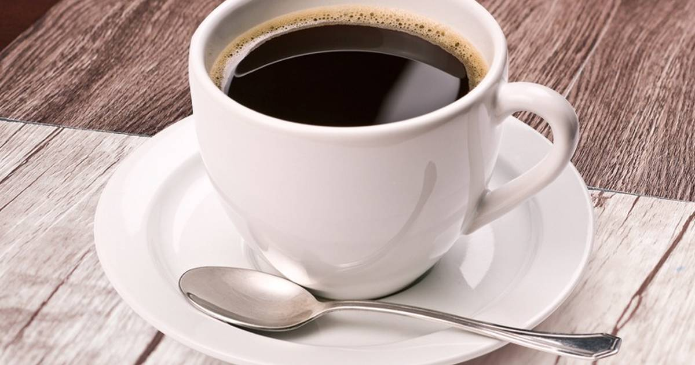
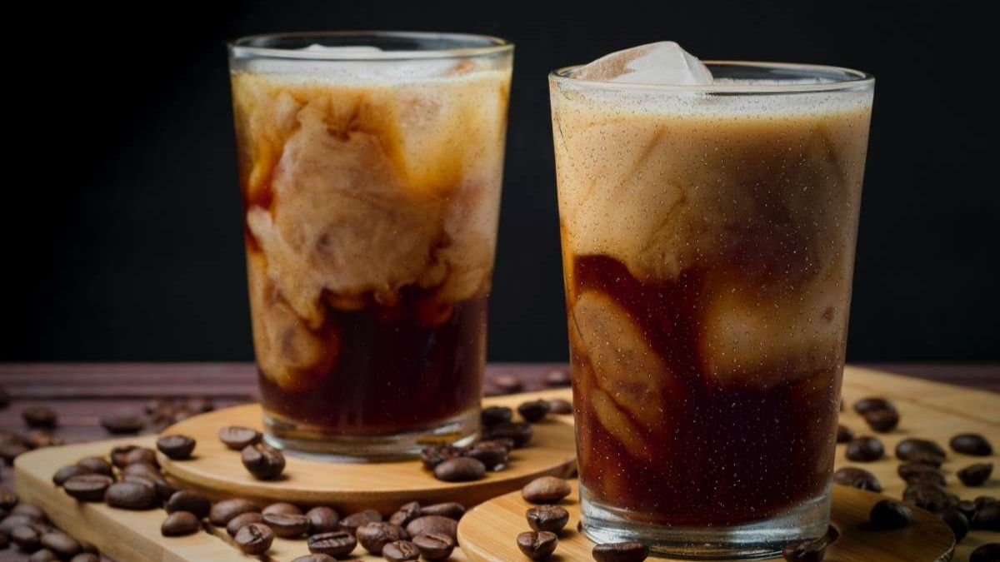
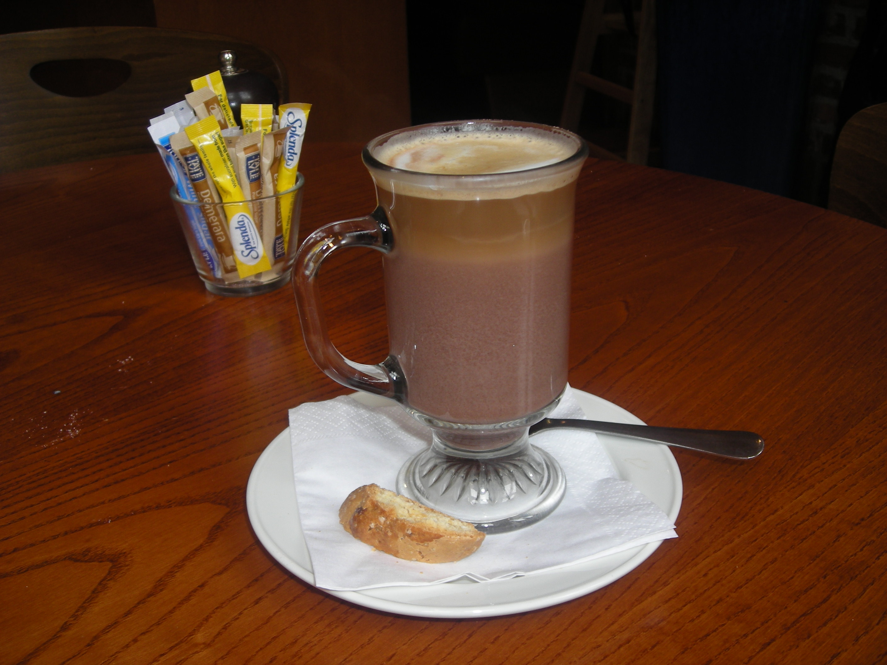

Café Espresso
Un tiro de café concentrado hecho al forzar agua caliente a través de granos de café finamente molidos. Es la base de muchas bebidas de café, como el cappuccino y el latte.
$35.00

Café Americano
Hecho con espresso y leche vaporizada. Suele tener una capa de espuma de leche en la parte superior y puede ser endulzado con jarabe de vainilla o caramel
$35.00

Café Latte
Se hace añadiendo agua caliente a un espresso. Es más suave que un espresso puro y suele servirse en tazas más grandes.
$55.00

Café Moka
Una mezcla de espresso, chocolate caliente y leche vaporizada. A menudo se decora con crema batida y chispas de chocolate..
$55.00